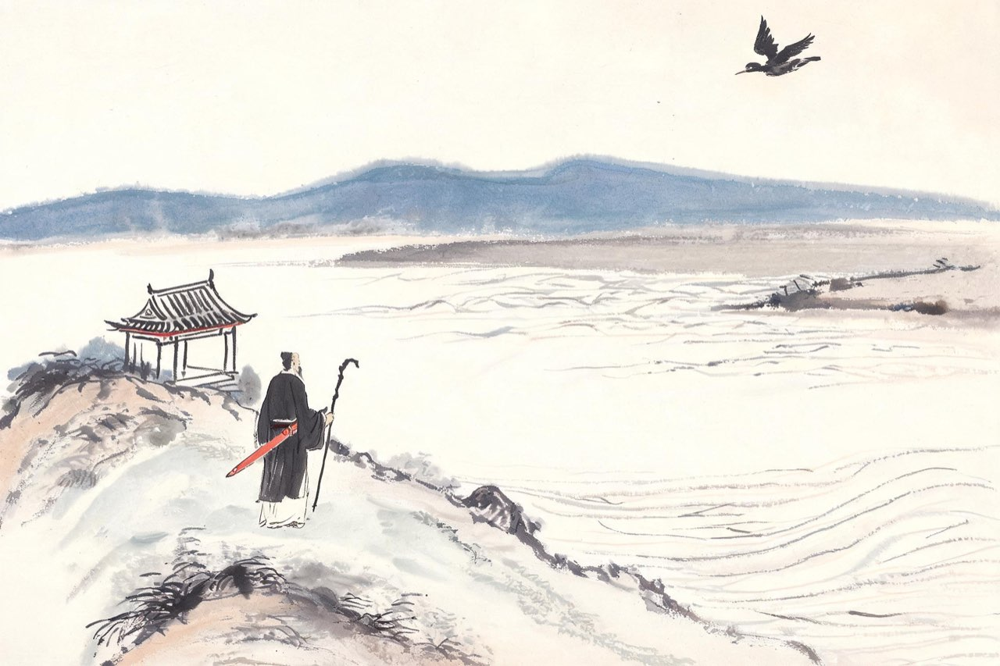
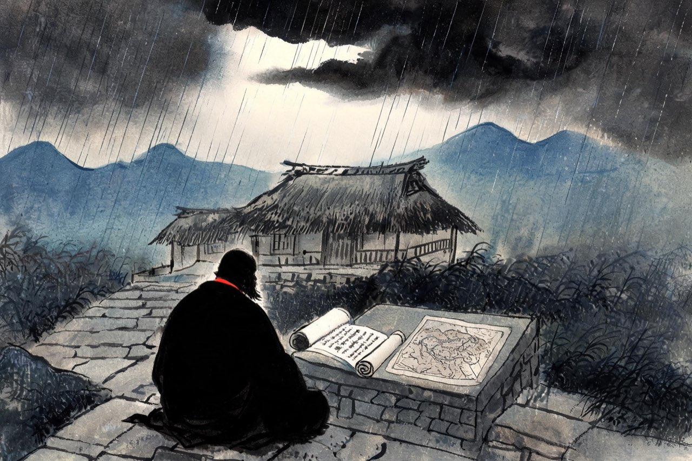

辛弃疾 · 1203-1207
北固
最后的战场
六十四岁
嘉泰三年，一纸诏书到了瓢泉：起用辛弃疾，知绍兴府兼浙东安抚使。
你六十四岁。离开任上的第十个年头，朝廷又想起你了。原因你清楚：韩侂胄当国，锐意北伐，起用主张用兵的老臣——为的是「收拾」主战派的门面。你，是这个门面上最亮的一块招牌。
门面也好，招牌也好，你去了。
绍兴任上数月，你照样治事：赈灾、平讼、修陂。你心里清楚此行真正的题目不在浙东——朝廷要伐金，先得有人懂金。满朝文武，论对金国虚实的了解，没有人比你更深。你等这一天等了四十年。
不久，诏令又下：改知镇江府——长江防线的要冲，对着北方的前沿。你终于站到了战争开始的地方。
注
- 韩侂胄起用主战派元老以张北伐之门面：通行史述（程珌等时人亦有记），措辞有概括，待校
- 浙东任上政绩（赈灾等）：从邓谱嘉泰三、四年纪事概括
- 差知镇江府：嘉泰四年（1204）初，从邓谱

北固亭
镇江城北，北固山临江而立，山上有亭，名曰北固。登亭北望，长江浩荡东去，对岸便是淮南——再往北，是你的故乡山东。
你到任就忙着备战：遣人潜入金境侦察虚实，又差官监督制造军服万领，先期屯扎——不打无准备的仗，这是你从燕京道上就刻在心里的信条。你把侦察所得整理成方略，上奏朝廷：伐金当先从山东起事，敌之重兵在河南，山东空虚，如此如此。
然而庙堂之上的北伐是另一种东西：韩侂胄要的是速胜的功名，不是万全的方略。你的话，又一次只被嘉许，不被采用。
京口的江风里，你一次又一次登上北固亭。看江，看山，看北岸。有些话在心里越积越厚——六十五岁的人了，这样的词，再不说，就没有机会说了。
注
- 遣谍侦察、造军服先期屯扎：从邓谱引程珌《丙子轮对札子》等时人记述，待校
- 「先从山东起事」方略：辛弃疾言金人重兵在河洛，宜先取山东——见《宋史》及时人所记，措辞概括，待校
- 「先被嘉许不被采用」：化用其屡谏不用之通况，措辞演绎，待校
开禧元年春，你在北固亭写下这首词。京口是孙权建都之地、刘裕生长之乡，也是元嘉北伐惨败的旧战场。四十三年前你渡江南来，正是完颜亮南侵、烽火扬州的年月。登亭怀古，一首词里放了两个刘姓皇帝、一场仓皇的败仗，和一个不服老的老人——
永遇乐·京口北固亭怀古
千古江山，英雄无觅，孙仲谋处。
舞榭歌台，风流总被，雨打风吹去。
斜阳草树，寻常巷陌，人道寄奴曾住。
想当年，金戈铁马，气吞万里如虎。
元嘉草草，封狼居胥，赢得仓皇北顾。
四十三年，望中犹记，烽火扬州路。
可堪回首，佛狸祠下，一片神鸦社鼓。
凭谁问：廉颇老矣，尚能饭否？
注
- 「四十三年」：自绍兴三十二年（1162）南渡至开禧元年（1205），恰四十三年——与本篇第二章五十骑故事遥扣
- 元嘉草草：宋文帝刘义隆元嘉年间草草北伐，为王玄谟「封狼居胥」之言所动，大败——「仓皇北顾」讥之；借古讽今，讽韩侂胄轻率用兵
- 佛狸祠下：北魏太武帝拓跋焘（小字佛狸）追敌至长江北岸，立行宫后成佛狸祠——沦陷已久，遗民竟于异主祠下祭赛，「神鸦社鼓」，痛语
- 廉颇老矣：战国赵将廉颇晚年见使，一饭斗米肉十斤，被仇者谗「顷之三遗矢矣」遂不用——自况
- 写词季节：词系开禧元年，具体月份无明文，正文作「春」为推定，待校
还是北固亭，还是这一年。上一首怀古沉郁，这一首却爽利如少年——你望着满眼风光，想起千百年前那个坐断东南的年轻人——
南乡子·登京口北固亭有怀
何处望神州？满眼风光北固楼。
千古兴亡多少事？悠悠。不尽长江滚滚流。
年少万兜鍪，坐断东南战未休。
天下英雄谁敌手？曹刘。生子当如孙仲谋。
注
- 系年开禧元年前后（1204-1205），本场景从方案取1205，待校
- 「生子当如孙仲谋」：曹操语（《三国志》注引），赞孙权守业
- 兜鍪（móu）：头盔，代指兵士——「年少万兜鍪」言孙权少年统军
- 明颂孙权，实讥当朝：无一语点破，而无处不是——笺解从通行本

再罢
开禧元年的北伐，正在被推向一场没有准备的豪赌。你一再谏阻轻进——庙堂里的结论却是：这个老头的谨慎，碍事。
夏天，言官弹劾你「好色贪财，淫刑聚敛」。罢官诏下，改任宫观闲职。你交出帅印，离开镇江，回铅山去。
这是第四次。你六十六岁。
瓢泉的秋雨一场接一场。你坐在草堂阶前，案上摊着邸报——朝廷正在议论出师的日期，主和的人被贬斥，主战的人被催促，没有一个人在议论粮草和山东。你比任何人都清楚接下来会发生什么，你把方略写了几十年，如今只能在山里等着它应验。
远方的坏消息，还在路上。天光在云层后面，暗着，但还没有黑透。
注
- 罢镇江任年份：开禧元年（1205），从邓谱——本场景一切叙事以此为准，非1206
- 弹章语「好色贪财，淫刑聚敛」等：出开禧元年言官弹章（具体人名职衔从邓谱，待校）
- 弹章月份：正文作「夏天」，通行记开禧元年三月降朝散大夫、提举冲佑观，月份待校
- 「没有一个人在议论粮草和山东」：以辛弃疾山东方略为参照的行文笔法，演绎，待校
- 画面与文案止于「坏消息的先声」：正式下诏伐金在开禧二年（1206），败局消息入下一场景——时序红线
- 罢官计数：正文作「第四次」，与终章「三起三落」口径（1181、1194、1205 三罢）不一——按该口径本篇为第三次，计数待统一，待校
杀贼
此后两年，你都在瓢泉。
开禧二年，朝廷又想起你，诏命下来，你上章辞免——不是不要，是身体先垮了。同年，宋正式下诏伐金，兵败如山倒；战局崩坏的消息传到山里，比邸报更快的，是你自己心里的那个声音：你四十年前就把这一切算完了。
开禧三年秋，朝廷最后一次起用你的诏书到了铅山：召赴行在，任枢密都承旨，参预军机——命你速来。诏书进山的时候，你已经病得起不了身。你挣扎着上章请辞。这一次，是真的去不了了。
九月初十，你在这间草堂里停止了呼吸。人们记下了你最后的时刻——病榻上的老人，用尽力气，向空中连呼：杀贼！杀贼！数声而止。
两个月后，十一月，韩侂胄被诛，宋金议和。你没能看到，也早已不想看到。
你这一生，二十三岁渡江，带着五十骑的胆气；四十二岁被弃，闲了将近二十年；此后三起三落，朝廷每一次起用你都是为了门面，每一次丢弃你都毫不可惜。你要的是收复，给你的只有词。
于是词成了刀。你把军事家的方略、武人的血气和农民的耐心都写进了长短句——后人说，词中之龙。龙的本意，是要在风雨里做事的。
李白临终，传说他去水中捉月。你也留下了一个传说：不是骑鲸，不是登仙，是一个老人喊杀贼的声音。一个回到月亮，一个呼喊到最后一刻。
剑的回声，传了一千年。
注
- 临终「杀贼」：见清《康熙济南府志·人物传四》「大呼杀贼杀贼数声而止」，非宋人记载，属方志追记层；谢枋得《宋辛稼轩先生墓记》所记为过墓旁僧舍闻「疾声大呼于祠堂」之神异传闻（《宋史》本传亦收），并无「杀贼」二字——本篇以「人们记下了」口吻处理
- 开禧二年（1206）再起辞免、下诏伐金旋败；开禧三年（1207）枢密都承旨诏至病笃辞免——职名与月序从邓谱，待校
- 卒年：开禧三年九月初十，年六十八（虚岁）——从邓谱
- 韩侂胄诛于开禧三年十一月（嘉泰以后史实），在辛弃疾身后约两月
- 「三起三落」总计：1181罢、1192起、1194罢、1203起、1205罢——正文「三起三落」之「三起」以1192/1203两次实任加南渡初期宦游计，表述从本篇方案口径
- 「词中之龙」：清人评语之通行转述，非辛弃疾自号